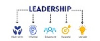
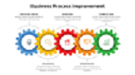

Leadership Project
We engaged across the organization on High Trust Partnerships (HTP), one the Technology Key Enablers. We engaged strategy leaders around Cost Transparency and Product Funding, Product Mindset and Scaled Practices..

Business Process Project
We redesigned our business processes as part of our SCD ABOR implementation, aligned functions to the appropriate teams, centralized production support and refactored our data flows..

Data Project
We built a Data Warehouse, created ETL patterns for loading facts and dimensions, defined staging areas, built out a semantic layer and enabled BI tools..